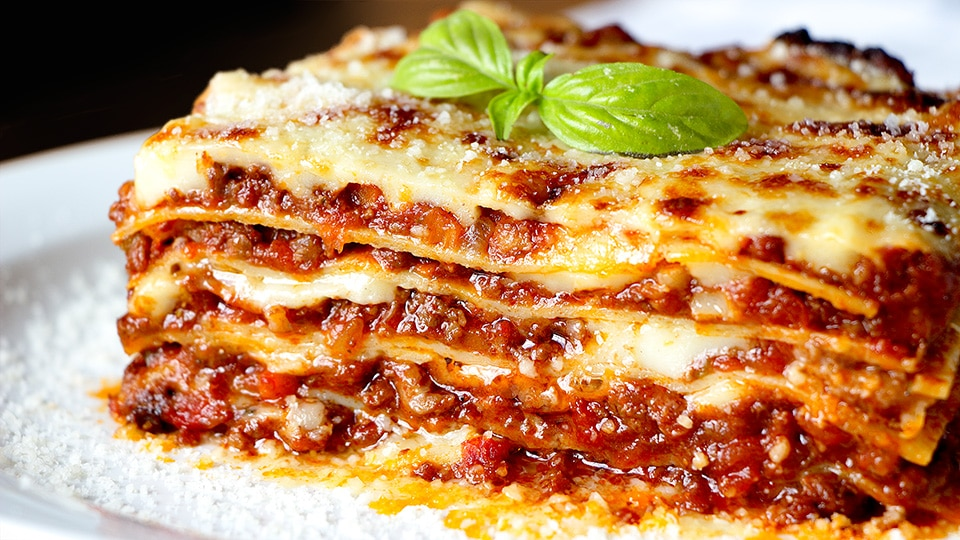
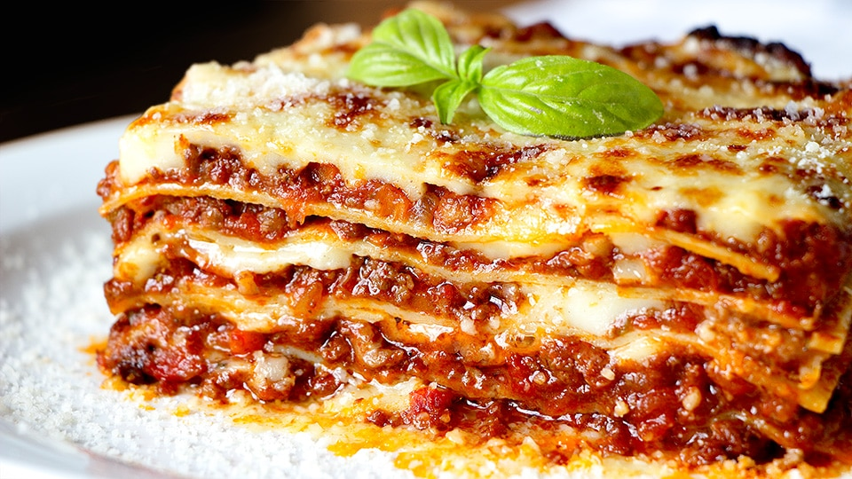

Los gatos domésticos son una de nuestras mascotas favoritas
Los gatos son animales bellos, juguetones y cariñosos,
Los gatos son muy ágiles
Los gatos se comunican a través de vocalizaciones
:format(webp)/cloudfront-us-east-1.images.arcpublishing.com/grupoclarin/GYZTIMBQGI2GCZRTG44DEYRTGI.png) 

Cosas que los gatos odian:
 Párrafo 1
Párrafo 2
Párrafo 3
Parráfo 4
Párrafo 1
Párrafo 2
Párrafo 3
Parráfo 4
Los gatos domésticos, sea cual sea su raza, son todos miembros de una misma especie.
Los gatos se comunican marcando árboles, postes o muebles con sus garras o con su orina.
La dieta de los gatos domésticos se ha mantenido carnívora, por ello han desarrollado un intestino apropiado para digerir la carne cruda. También conservan la lengua áspera que puede ayudarlos a limpiar hasta el último bocado de un hueso de animal.
rLas frases para recordar que la vida es bella nos hacen ver que estamos en el mundo para ser felices. Que los obstáculos son una forma de aprender y que cada uno de nosotros merece estar bien y alcanzar lo que se propone. De eso va la aventura de vivi.
Una de las frases para recordar que la vida es bella la dijo el famoso Bob Marley. Lo expresa de una manera sencilla, pero completamente encantadora. Dice así: «Vive la vida que amas. Ama la vida que vives». El amor está en el centro de todo y es desde ese sentimiento que todo cobra sentido.
En este link puedes ver más imágenes de gatos.

Visita nuestro nuevo sitio web aquí